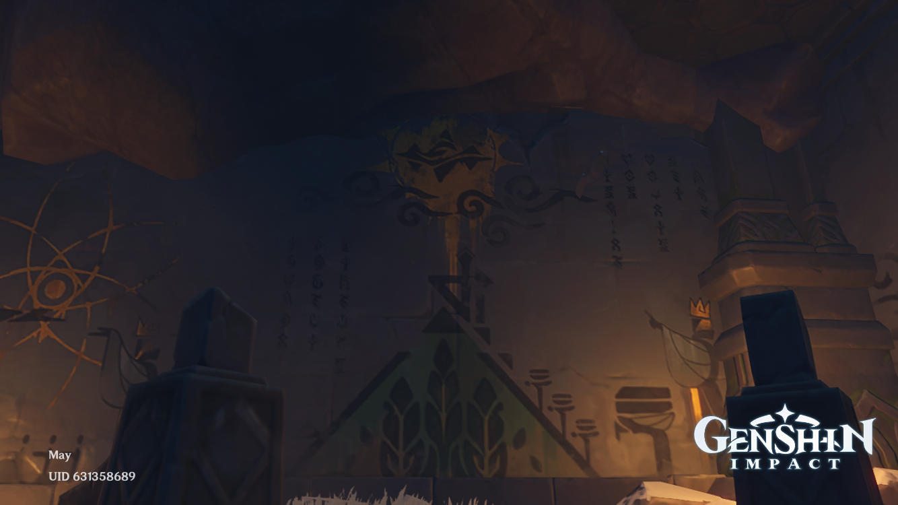
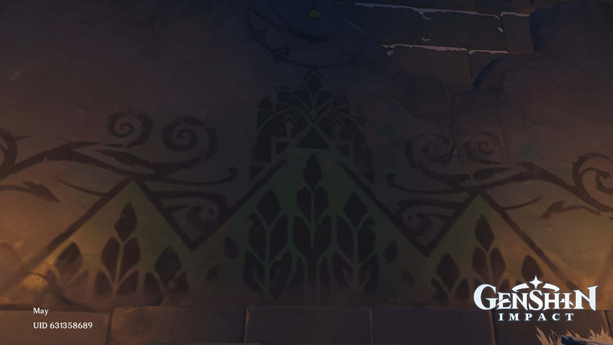
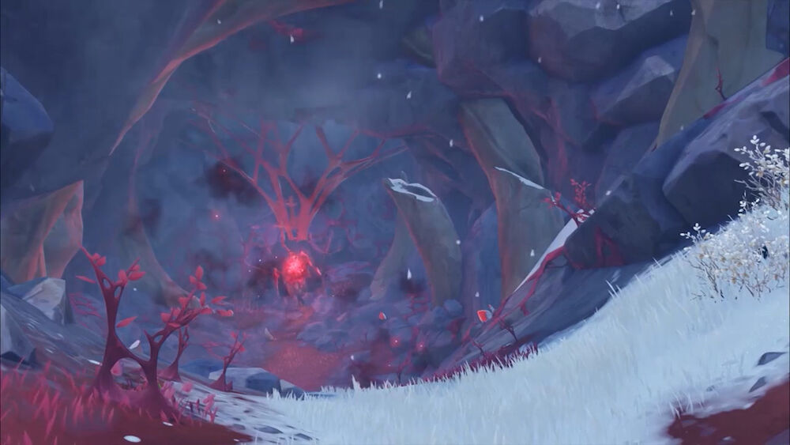

Mural Room
 The Mural Room is a sealed area that can only be accessed when the traveller has read the contents of 9 ancient carvings around Dragonspine. Inside the room, there are 2 murals depicting the ancient civilization.
One of the carvings is in the Secret Room. The room can only be opened with the Princess' Box, the Priest's Box and the Scribe's Box. The boxes have descriptions that tell the story of three people of the civilization: the Princess of Sal Vindagnyr, her father King-Priest Varuch, and the scribe Ukko.
Durin

Durin's body aws
The Skyfrost Nail
Celestia, the palace in the sky where gods reside, casted the Skyfrost Nail upon the ancient civilization as punishment for questioning the heavens' authority. The nation soon turned into a region of extreme cold.
The traviller has to restore the nail. After breaking the strang ice surrounding the nail, the nail rises from the peak and floats above Dragonspine.
More Interesting Facts
Record of Serial No.
Nine ruin guards located in Dragonspine can be interacted with. The messages they give are as follows:
- Record of Serial No. HU-16180: "3.2-..3-.23-.32-32.-3..-"
- Record of Serial No. HU-21030: "..2-223-.32-322-..3-..2-"
- Record of Serial No. HU-31122: "2.2-3..-232-223-..2-.32-"
- Record of Serial No. HU-42318: "3.2-..3-.23-3.3-..3-"
- Record of Serial No. HU-57104: ".32-32.-322-.3.-"
- Record of Serial No. GN/Hu-68513: ".3.-33.-22.-23.-..3-.23-..2-3..-"
- Record of Serial No. HU-73011: ".2.-..3-2.2-3..-.23-"
- Record of Serial No. HU-81122: "23.-.33-.32-2.2-3..-"
- Record of Serial No. HU-96917: "3.2-223-322-332-3..-233-"
The messages can be de-coded to get the following message: "ITALICS For the nation we can't forgo this skyborne power, but we failed."
The Skyfrost Nail is one of the highest accessable points in the world on Genshin. You can see the entire continent of Teyvat from there.